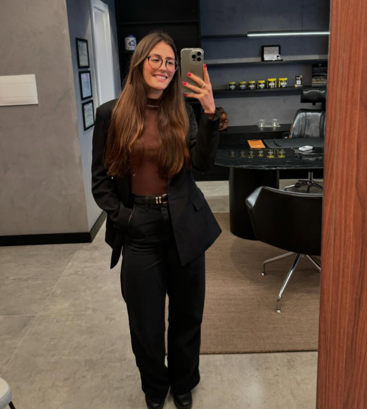

Emagrecimento
Plano alimentar e acompanhamento clínico focados em perda de gordura com saúde e constância.
Saber maisAtendimento individual em Santa Cruz do Sul para reeducar sua alimentação, entender seu corpo e manter os resultados no longo prazo.
Plano alimentar e acompanhamento clínico focados em perda de gordura com saúde e constância.
Saber maisCuidado humanizado e multidisciplinar para resgatar uma relação leve e saudável com a comida.
Saber maisUma consulta para entender sua história, sua rotina, seus objetivos e o que já tentou antes.
Estratégia alimentar e clínica personalizada, ajustada à sua vida real.
Retornos periódicos para ajustar, sustentar resultados e celebrar cada etapa.
Comecei a clinicar com a convicção de que emagrecer não deveria ser sinônimo de sofrimento. Cada pessoa tem uma história, uma rotina e um corpo que merecem ser ouvidos antes de qualquer plano.
Meu trabalho usa reeducação alimentar, sempre com calma, ciência e respeito ao seu ritmo. Quero que você saia de cada consulta mais segura e com autonomia para cuidar de si.

“Pela primeira vez entendi o meu corpo. Não foi dieta da moda, foi um caminho que eu consegui manter.”
Consulte horários e disponibilidade pelo WhatsApp.